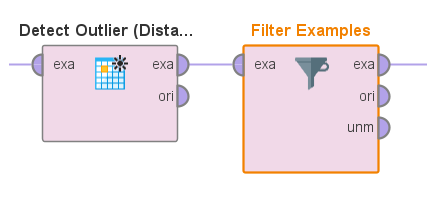
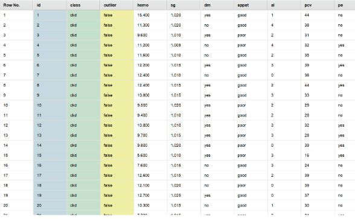
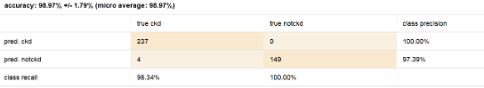

DIAGNÓSTICO PRECOZ DE ENFERMEDAD CRÓNICA DE RIÑÓN
1. ANÁLISIS DEL PROBLEMA, CONTEXTO Y DOCUMENTACIÓN CORRESPONDIENTE
Actualmente, hay muchas personas en el mundo que padecen enfermedades renales. Debido a varios factores de riesgo como la alimentación, el medio ambiente y el nivel de vida, muchas personas contraen enfermedades repentinamente sin comprender su condición. El diagnóstico de enfermedades renales crónicas es generalmente invasivo, costoso, lento y a menudo riesgoso. Es por eso que muchos pacientes llegan a etapas tardías sin tratamiento, especialmente en aquellos países donde los recursos son limitados. Por lo tanto, la estrategia de detección temprana de la enfermedad sigue siendo importante, particularmente en los países en desarrollo, donde las enfermedades generalmente se diagnostican en etapas tardías.
Como objetivo, nos planteamos poder detectar si una persona puede o no presentar una enfermedad crónica de riñón. Para esto se utiliza el dataset chronic kidney disease de UCI (link al mismo). Encontramos una serie de atributos los cuales nos ayudarán a detectar si una persona tiene o no esta enfermedad.
Lista de Atributos:
- Edad (Age): Atributo numérico que representa la edad en años de los pacientes.
- Presión Arterial (Blood Pressure): Atributo numérico que describe la presión arterial en mm/Hg.
- Gravedad Específica (Specific Gravity): Atributo nominal con valores discretos.
- Albúmina (Albumin): Atributo nominal con valores discretos.
- Azúcar (Sugar): Atributo nominal con valores discretos.
- Glóbulos Rojos (Red Blood Cells): Atributo nominal con dos categorías, "normal" o "anormal".
- Células de Pus (Pus Cell): Atributo nominal con dos categorías, "normal" o "anormal".
- Agrupación de Células de Pus (Pus Cell Clumps): Atributo nominal con dos categorías, "present" o "notpresent".
- Bacterias (Bacteria): Atributo nominal con dos categorías, "present" o "notpresent".
- Glucosa en Sangre al Azar (Blood Glucose Random): Atributo numérico que representa el nivel de glucosa en sangre en mg/dl.
- Urea en Sangre (Blood Urea): Atributo numérico que describe el nivel de urea en sangre en mg/dl.
- Creatinina en Suero (Serum Creatinine): Atributo numérico que representa el nivel de creatinina en el suero en mg/dl.
- Sodio (Sodio): Atributo numérico que representa el nivel de sodio en mEq/L.
- Potasio (Potasio): Atributo numérico que describe el nivel de potasio en mEq/L.
- Hemoglobina (Hemoglobin): Atributo numérico que indica el nivel de hemoglobina en gramos.
- Volumen de Células Empaquetadas (Packed Cell Volume): Atributo numérico que representa el volumen de células sanguíneas en unidades de medida específicas.
- Recuento de Glóbulos Blancos (White Blood Cell Count): Atributo numérico que describe el recuento de glóbulos blancos en células/cumm (por milímetro cúbico).
- Recuento de Glóbulos Rojos (Red Blood Cell Count): Atributo numérico que representa el recuento de glóbulos rojos en millones/cmm (por milímetro cúbico).
- Hipertensión (Hypertension): Atributo nominal con dos categorías, "yes" (sí) o "no" (no).
- Diabetes Mellitus (Diabetes Mellitus): Atributo nominal con dos categorías, "yes" (sí) o "no" (no).
- Enfermedad de las Arterias Coronarias (Coronary Artery Disease): Atributo nominal con dos categorías, "yes" (sí) o "no" (no).
- Apetito (Appetite): Atributo nominal con dos categorías, "good" (bueno) o "poor" (pobre).
- Edema en los Pies (Pedal Edema): Atributo nominal con dos categorías, "yes" (sí) o "no" (no).
- Anemia (Anemia): Atributo nominal con dos categorías, "yes" (sí) o "no" (no).
- Clase (Class) (Objetivo): Atributo nominal con dos categorías, "ckd" (enfermedad renal crónica) o "notckd" (no enfermedad renal crónica).
2. PREPARACIÓN DE LOS DATOS y ANÁLISIS PREVIO
El análisis y preparación de datos es una de las partes más fundamentales a la hora de realizar un caso de estudio de aprendizaje automático. En esta fase nos centramos en garantizar que los datos estén en una forma óptima para alimentar nuestros modelos y extraer conocimientos valiosos.
Calidad de los Datos
Evaluaremos la calidad general del dataset, buscando posibles errores de entrada, valores atípicos y anomalías que puedan afectar la integridad de los datos. Es muy común que al obtener un dataset, nos encontremos con atributos con tipado incorrecto, con valores que no corresponden para el tipo de datos del atributo,etc
Pasos a seguir Rapidminer:
- A la hora de importar el dataset en rapidminer, debemos revisar que todos los atributos tengan su tipo de dato correcto. Como se visualiza en la siguiente imagen, cuando importamos el dataset, podemos detectar que tenemos al menos 259 missing values. Los cuales tendremos que tener en cuenta y tratarlos posteriormente.
-
Eliminación de valores raros del dataset luego de la importación.
Luego de importar el dataset, se pueden detectar distintos errores en los valores que tienen algunos registros en algunos atributos.
- Se pueden presentar caracteres que no representan nada en nuestros registros, por lo que hay que deshacernos de ellos. Para esto podemos utilizar el operador “Replace” para sustituir todos estos caracteres por “” los cuales tomaremos como missing values posteriormente. En el caso específico de este dataset, nos encontramos con el carácter “?”, el cual vamos a sustituir por “”
- Eliminación de registros duplicados. La eliminación de registros duplicados es una buena práctica en algunos datasets pero no en todos. Por ejemplo en este caso, no se cuenta con información de las personas, únicamente con su edad por lo que no podemos estar seguros de que una persona está ingresada duplicada, sino que pueden ser 2 personas distintas con la misma edad y los mismos valores para el resto de atributos. Si tuviéramos algún atributo característico de la persona como CI o algún otro dato único de una persona podríamos realizar la eliminación de registros duplicados ya que nos encontramos con un error en la recopilación de información.
Una vez verificamos que todos los datos importados estén en su formato correcto (Atributos con su tipado correcto y valores correctos para cada atributos), podemos pasar a enfocarnos en los valores faltantes (Missing Values).
Missing Values (Valores Faltantes):
Se identifican los registros y atributos que contienen valores faltantes y consideraremos las estrategias para tratarlos, que pueden incluir la eliminación de registros, la imputación de valores o la toma de decisiones específicas basadas en el contexto.
Existen varias maneras de tratar con los missing values:
- Imputación de la Mediana o la Moda: Se pueden imputar los missing values con la mediana (para datos numéricos) o la moda (para datos categóricos).
- Imputación con Valores Específicos: En algunos casos, es posible tener información adicional que te permita imputar los missing values con valores específicos que tengan sentido en el contexto de tu problema.
- Eliminación de registros: En algunos casos, cuando tenemos datasets muy grandes, la pérdida de unos registros no significa un gran problema, por lo que nos podemos dar el privilegio de eliminar esos registros y trabajar con el resto. Esto no es muy recomendable cuando tenemos un dataset con pocos registros, ya que estaríamos perdiendo datos importantes por algunos missing values que podríamos manejar de alguna otra manera.
Claramente todas las maneras que seleccionemos tienen sus ventajas y sus desventajas por lo que hay que conocerlas todas y decidir cuándo es mejor utilizar cada una.
Detección de Outliers (Valores Atípicos):
La detección de outliers, o valores atípicos, desempeña un papel fundamental en el análisis de datos y el aprendizaje automático. Estos valores inusuales pueden tener un impacto significativo en la calidad de los modelos y los resultados.
Para esto, se exploran los datos en busca de valores atípicos que puedan distorsionar los resultados del análisis y los modelos.
Existen varias maneras de detección de outliers:
- Verificación manual: Mediante gráficas o visualización de todos los valores de cada atributo podemos identificar la presencia de outliers en cada atributo. En estos casos podríamos cambiar manualmente los dichos registros para quitar los outliers. Modificando los valores de dichos registros para que estén más cerca de la media o filtrarlos para no trabajar con ellos.
- Detección mediante distancias: Es una técnica que se basa en medir cuán lejos se encuentra cada punto de datos con respecto al resto del conjunto de datos. Se utilizan diversas métricas de distancia, como la distancia euclidiana o la distancia Mahalanobis, para calcular la separación entre un punto y los demás. Los puntos que están significativamente más lejos de la mayoría de los datos se consideran valores atípicos o outliers. Rapidminer nos proporciona un operador (“Detect Outlier (Distances)”) que se encarga específicamente de esto.
Una vez identificados los outliers, al igual que utilizando la técnica anterior, podemos eliminarlos del dataset como también modificarlos para que se encuentren a menor distancia que el resto de los datos.
En este caso, se decidió utilizar la segunda técnica y eliminar todos los registros que presenten outliers, evaluando cada punto con respecto a los 10 puntos más cercanos a él.
Filtrado por Condiciones:
El filtrado por condiciones es una técnica fundamental en la preparación de datos que implica la selección de registros que cumplen con ciertas condiciones predefinidas. Dependiendo del contexto del análisis de datos o del problema en cuestión, puede ser esencial aplicar filtros para tomar únicamente los registros que son relevantes o significativos para los objetivos de la tarea.
En este caso en particular, no es necesario realizar ningún tipo de filtros por condiciones ya que el contexto no lo requiere.
Transformación de Atributos:
La transformación de atributos es un componente esencial de la preparación de datos en proyectos de aprendizaje automático. Esta etapa implica la modificación de las características o atributos de los datos para asegurarse de que sean adecuados para el algoritmo que se utilizará. Dependiendo del contexto y el algoritmo, las transformaciones pueden incluir la normalización de valores numéricos para ponerlos en una escala común, la codificación de atributos categóricos en representaciones numéricas, entre otras transformaciones.
La elección de las transformaciones específicas es crucial, ya que puede influir en gran medida en la calidad y el rendimiento del modelo final.
Partición del Dataset:
La partición del dataset en conjuntos de entrenamiento (training) y prueba (test) es un procedimiento esencial en la preparación de datos para proyectos de aprendizaje automático (siempre y cuando no contemos con un conjunto de datos de test separado del conjunto de datos de entrenamiento). Una distribución muy utilizada es 70% de los registros se utilizan para entrenamiento y 30% para prueba. Su utilidad radica en evaluar el rendimiento de un modelo antes de implementarlo en datos no vistos. El conjunto de entrenamiento se utiliza para ajustar y entrenar el modelo, mientras que el conjunto de prueba se reserva para evaluar su capacidad de generalización. Este proceso permite verificar si el modelo es capaz de hacer predicciones precisas en datos que no ha visto previamente.
MODELOS PREDICTIVOS
En esta etapa del análisis, ya contamos con toda la preparación de datos para poder aplicar algún algoritmo y que el mismo se desarrolle de la mejor manera. Este caso de estudio es un caso de clasificación en el cual debemos determinar si la persona tiene o no la enfermedad. Con esta información, se decidió utilizar 3 algoritmos de clasificación como son Navie Bayes, Knn y Regresión Logística.
Naive Bayes:
El algoritmo de Naive Bayes es un algoritmo de clasificación por lo que es una de las opciones que se consideraron a la hora de abordar el problema.
Dentro del subproceso de Bayes nos encontramos con los siguientes operadores
Se utilizó el algoritmo de Naive Bayes de 3 maneras distintas.
En los 3 casos se podría haber discretizado para tener todos los atributos como categorías y quizás el algoritmo podría llegar a ser un poco más preciso. (No contaba con tiempo suficiente como para categorizar todos los atributos numéricos)
-
Bayes directamente con todos los atributos del dataset:
Se utilizó cross validation con bayes dentro y el operador de performance para visualizar qué tan preciso es el algoritmo.

Como se puede visualizar en la siguiente imagen, el algoritmo de bayes tuvo una precisión de 98,5%, lo cual es un muy buen número. Esto se llevó a cabo utilizando el algoritmo con los 24 atributos que proporciona el dataset.
-
Bayes con Forward Selection:
Se probó utilizar Forward Selection para seleccionar los atributos más relevantes y aplicar bayes sobre los mismos para ver si había algún tipo de diferencia con respecto a las otras 2 maneras de evaluar Bayes.
Como se visualiza en la siguiente imagen, notamos una mejora con respecto a utilizar todos los atributos del dataset. En este caso, el operador Forward Selection indicó que había 7 atributos relevantes. En este caso, tenemos una precisión de 99,5%.
-
Bayes con Backward Selection:
Se probó utilizar Backward Selection para seleccionar los atributos más relevantes y aplicar Bayes sobre los mismos para ver si había algún tipo de diferencia con respecto a las otras 2 maneras de evaluar Bayes.
Como se visualiza en la siguiente imagen, notamos una ligera mejora con respecto a utilizar todos los atributos del dataset, pero una peor precisión con respecto a la utilización de Forward Selection. En este caso, el operador Forward Selection indicó que había 23 atributos relevantes, por lo que únicamente quitó un atributo que no era del todo relevante. En este caso, tenemos una precisión de 98,87%.

Knn
El algoritmo de Knn es un algoritmo de clasificación por lo que es una de las opciones que se consideraron a la hora de abordar el problema.
Dentro del subproceso de KNN encontramos con los siguientes operadores
Se utilizó el algoritmo de Knn de 3 maneras distintas. En los 3 casos se podría haber cambiado el tipo de los atributos para tener todos los atributos como números y quizás el algoritmo podría llegar a ser un poco más preciso. (No contaba con tiempo suficiente como para pasar todos los atributos a números y comparar con respecto a los resultados arrojados sin dicha conversión)
-
KNN directamente con todos los atributos del dataset:
Se utilizó cross validation con KNN dentro y el operador de performance para visualizar qué tan preciso es el algoritmo.

Como se puede visualizar en la siguiente imagen, el algoritmo de Knn tuvo una precisión de 74,1% lo cual no está ni cerca de los resultados obtenidos con otros algoritmos utilizados previamente. Esto se llevó a cabo utilizando el algoritmo con los 24 atributos que proporciona el dataset.
-
Knn con Forward Selection:
Se probó utilizar forward Selection para seleccionar los atributos más relevantes y aplicar Knn sobre los mismos y ver si había algún tipo de diferencia con respecto a las otras 2 maneras de evaluar el algoritmo Knn.
Como se visualiza en la siguiente imagen, notamos una mejora con respecto al utilizar todos los atributos del dataset. En este caso el operador forward Selection indicó que habían 7 atributos relevantes. En este caso tenemos una precisión de 97,18%
-
Knn con Backward Selection:
Se probó utilizar Backward Selection para seleccionar los atributos más relevantes y aplicar Knn sobre los mismos y ver si había algún tipo de diferencia con respecto a las otras 2 maneras de evaluar Knn.
Como se visualiza en la siguiente imagen, notamos una ligera mejora con respecto al utilizar todos los atributos del dataset pero una peor precisión con respecto a la utilización de Forward Selection. En este caso el operador forward Selection indicó que habían 23 atributos relevantes, por lo que únicamente quitó un atributo que no era del todo relevante. En este caso tenemos una precisión de 96,67%
Regresión Logística
El algoritmo de Regresión Logística es un algoritmo de clasificación por lo que es una de las opciones que se consideraron a la hora de abordar el problema.

Dentro del subproceso de Regresión Logística encontramos con los siguientes operadores
Se utilizó el algoritmo de Regresión Logística de 3 maneras distintas. En los 3 casos se podría haber cambiado el tipo de los atributos para tener todos los atributos como números y quizás el algoritmo podría llegar a ser un poco más preciso. (No contaba con tiempo suficiente como para pasar todos los atributos a números y comparar con respecto a los resultados arrojados sin dicha conversión)
-
Regresión Logística directamente con todos los atributos del dataset:
Se utilizó cross validation con Regresión Logística dentro y el operador de performance para visualizar qué tan preciso es el algoritmo.

Como se puede visualizar en la siguiente imagen, el algoritmo de Regresión Logística tuvo una precisión de 94,87% lo cual es un valor que se asemeja mucho a los valores obtenidos en los otros algoritmos. Esto se llevó a cabo utilizando el algoritmo con los 24 atributos que proporciona el dataset.
-
Regresión Logística con Forward Selection:
Se probó utilizar forward Selection para seleccionar los atributos más relevantes y aplicar Knn sobre los mismos y ver si había algún tipo de diferencia con respecto a las otras 2 maneras de evaluar el algoritmo Regresión Logística.
Como se visualiza en la siguiente imagen, notamos una mejora con respecto al utilizar todos los atributos del dataset. En este caso el operador forward Selection indicó que habían 7 atributos relevantes. En este caso tenemos una precisión de 99,23%
-
Regresión Logística con Backward Selection:
Se probó utilizar Backward Selection para seleccionar los atributos más relevantes y aplicar Knn sobre los mismos y ver si había algún tipo de diferencia con respecto a las otras 2 maneras de evaluar Regresión Logística.
Como se visualiza en la siguiente imagen, notamos una ligera mejora con respecto al utilizar todos los atributos del dataset pero una peor precisión con respecto a la utilización de Forward Selection. En este caso el operador forward Selection indicó que habían 23 atributos relevantes, por lo que únicamente quitó un atributo que no era del todo relevante. En este caso tenemos una precisión de 96,41%
Conclusion
Luego de evaluar 3 maneras distintas por cada uno de los 3 algoritmos que se seleccionaron, se pueden sacar las siguiente conclusiones. En la mayoría de los algoritmos, el porcentaje de precisión estaba por encima de 95. A excepción de Knn sin selección de atributos que dio un 5 de precisión bastante bajo en comparación con el resto. Utilizando el algoritmo de Naive Bayes junto con la técnica de 'Forward Selection,' hemos logrado alcanzar una precisión notable del 99.5% en la detección de enfermedades crónicas renales. Este nivel de precisión es un hito significativo, ya que sugiere la capacidad de diagnosticar enfermedades renales de manera altamente confiable. Si se aplicara en un contexto del mundo real, esta solución podría tener un impacto sustancial en la salud de las personas al permitir diagnósticos más tempranos y precisos, lo que, a su vez, podría llevar a un tratamiento más efectivo y una mejor calidad de vida para los pacientes. La detección temprana de enfermedades crónicas renales es crucial, ya que muchas de estas condiciones son asintomáticas en las etapas iniciales. Con esta alta precisión, podríamos proporcionar a los profesionales médicos y pacientes una herramienta poderosa para la toma de decisiones informadas y la atención médica preventiva, lo que contribuiría a mejorar la salud y el bienestar de las personas afectadas por estas enfermedades.